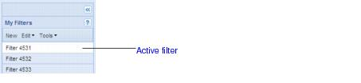

Trip explorer In the Trip explorer you can search for trips. The result of a trip search, called a filter, is saved with a unique name.  When you open the Trip browser, the top filter is selected by default in the Trip explorer, with its contents displayed in the Trip work area. Click another filter to display its trip search results in the Trip work area. Only one filter can be selected at a given time. The Trip explorer contains the Filter menu, the Edit menu, and the Tools menu. Filter menu The Filter menu has the following commands: New Creates new filter, see Creating filters Open Opens the selected filter, see Modifying filters. Edit menu The Edit menu has the following commands: Delete Deletes the selected filter, see Deleting filters. Tools menu The Search menu has the following commands: Show Roster Simulator line Displays the Roster Simulator line in the Calendar, see Showing Roster Simulator line. Hide Roster Simulator line Hides the Roster Simulator line in the Calender, see Hiding Roster Simulator line. This command is only available after you have selected the Show Roster Simulator command. Print Filter Displays a report containing the search criteria for the selected filter, see Printing filter criteria.